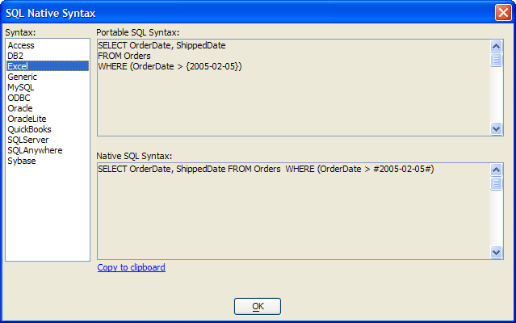

SQL Native Syntax Dialog Box
The SQL Native Syntax dialog allows you to see the Portable SQL that you have created in the <span class=Screen>SQL Genie</span> and the corresponding SQL in the native dialect of any of these databases.
"Access"
"DB2"
"Excel"
"MySQL"
"OCI"
"ODBC"
"Oracle"
"OracleLite"
"QuickBooks" (requires QOBC license)
"SQLAnywhere"
"SQLServer"
"Sybase"
Select any database from the Syntax list and the translated version of its SQL will appear in the bottom panel. Click Copy to Clipboard to copy the translated SQL to the Clipboard.

See Also